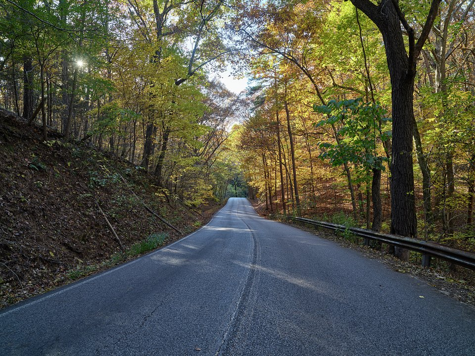

Mountaintop · 1886
Crescent Hotel & Spa
A grand 1886 hotel on the hill above town, with a spa, a rooftop SkyBar and famous ghost tours.
Official details for Crescent Hotel & SpaA Victorian town carved into the Ozark hills.
Eureka Springs is a Victorian spa town whose winding streets climb steep Ozark hillsides, with no two streets crossing at right angles. Stay at a grand 1886 hotel on the mountaintop, walk the historic loop of shops and springs, sit in the soaring glass Thorncrown Chapel in the woods, and ride a vintage train.

Time illustration: direct distance at 150 KTAS plus 15 minutes for departure and arrival, matching the discovery page. Use ForeFlight for your actual flight plan.
Check the weekend weather at both ends → Flight category, your minimums and the crosswind on the best runway.
4M1, Carroll County Airport, is a small airport west of Berryville, about 20 minutes from Eureka Springs.
518 County Road 308, Berryville, AR 72616
A small field with self-serve 100LL. Call ahead about hours, parking and a rental car or ride into town. No live fuel price is shown.
Ozark hills and ridges surround the field. About 740 nm from Myrtle Beach: plan a fuel stop and consider a third night. Review the sectional and current NOTAMs.
Rates and availability need travel dates.
A grand 1886 hotel on the hill above town, with a spa, a rooftop SkyBar and famous ghost tours.
Official details for Crescent Hotel & SpaA historic hotel on Basin Spring Park in the middle of downtown.
Official details for Basin Park HotelDozens of B&Bs and cottages in the hills.
Official details for Eureka Springs visitor guidePrices and availability for your dates, through our partner Stay22. This is an affiliate link: we may earn a commission at no cost to you. The picks above are never paid.
Reserve weekend dinners.
Dinner in the Crescent’s grand dining room, then a rooftop drink at the SkyBar.
Official details for Crystal Dining RoomSteaks and wood-fired dishes in a stone grotto downtown, a special-occasion favorite.
Official details for Grotto Wood-Fired Grill & Wine CaveA cozy café below street level on Main Street.
Official details for Mud Street CaféWear good walking shoes.
A soaring wood-and-glass chapel in the forest, designed by E. Fay Jones.
Visit informationVictorian buildings, shops, galleries and springs along the winding streets.
A vintage train ride through the hills. Seasonal.
Train scheduleClear water and bluffs a short drive west.
The Crescent Hotel’s spa offers couples treatments on the mountaintop.
Booking: Ask about couples treatments, access for non-guests, current pricing and cancellation policy. No prices are shown here, and no appointment has been booked.
This prototype links to the local visitor site. It does not yet match events to your travel dates.
Music, arts and folk festivals fill the town.
The Ozark hills turn gold and red.
A festive Victorian Christmas.
Check the local calendar when choosing a weekend, and confirm dates and tickets with the organizer.
A sample weekend: the Victorian town, a glass chapel and two good dinners. A third night makes the long flight easier. No bookings or availability confirmed.
Land at 4M1 early and drive to town.
Thorncrown Chapel and the historic loop.
Lunch downtown, then back to the airport.
Land at 4M1, subject to weather, your fuel stop and your actual flight plan.
Check in and walk the historic loop.
Dinner at the Crystal Dining Room.
Thorncrown Chapel.
The vintage train, or the spa.
Dinner at the Grotto.
Breakfast at Mud Street Café.
Drive back to the airport and check fuel.
Let weather and your flight plan set the departure.
Turpentine Creek Wildlife Refuge.
Beaver Lake.
A ghost tour at the Crescent.
These details make the difference between an appealing list and a usable getaway.
Lodging and a car first, then dinners and the spa.
Self-serve fuel and limited services. Call ahead.
About 740 nm. Plan a fuel stop and consider a third night.
Downtown is hilly; the trolley helps.
Picks and links reviewed by WingAway Weekends. Hours, prices, menus and availability change often, so confirm directly with each place before booking. Spotted something out of date, or have a favorite we missed? Email us at hello@wingawayweekends.com.
WingAway Weekends helps you discover the destination. Use ForeFlight and current official aviation information for route, performance, weather, NOTAMs and preflight decisions. Flight planning and PIC responsibility stay with the pilot.
One fly-in weekend, a Fly to Lunch pick and the newest guides, about once a month.
Free. Unsubscribe anytime.